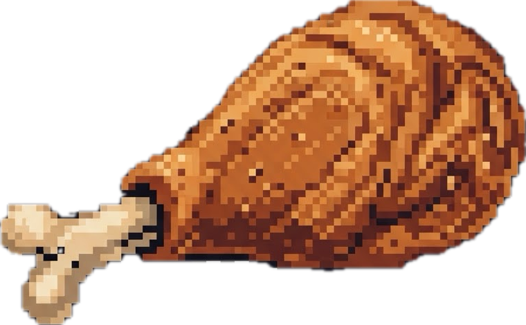

GOBLIN WAR
Day 1, Month 1, Year 1
12:00 PM
HP100/100
STA100/100

HNG100 THR100 50Wait here
Traveling to —…
—
LOADING THE MAP…
What's New
Welcome to Goblin War
Map & Travel
Tap a settlement to see it, then Travel Here to set out. The road costs real hours, Hunger, and Thirst — and after dark, it's riskier.
Combat
Ambushes happen on the road and in camp. Attack to swing, Special for a stronger move at the cost of Stamina, or Flee if the fight's going badly.
Survival
Keep an eye on Health, Stamina, Hunger, and Thirst in the header. Rest at a Tavern or make camp on the road to recover, and visit a settlement's Marketplace to restock.
—
Level Up
1
While You Were Away
This week in the realm
—
Ambush!